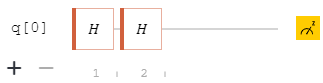

What are Quantum Circuits?
A quantum circuit is a network of wires, where we imagine qubits traveling around and going through different quantum gates. To understand what this actually looks like, it will be much easier to first understand probabilistic circuits
Probabilistic Circuits
If you've ever drawn a probability tree, you've also drawn a probabilistic circuit!

For example, if you have a biased coin colored blue and red, landing on blue 60% of the time,
and red 40% of the time. We can describe the process of flipping this coin twice using the probability tree to the right.
We can see how the probability mass progresses through the tree (highlighted in green),
by multiplying probability mass with the weight of each edge it passes over.
Let's say we're going to consider
it a "win" if we flip different colors in our consecutive tosses. We can then get the overall probability of "winning"
by adding up all the final probability masses that correspond to our win scenario, so in this case 0.24+0.24 = 0.48, not too bad odds!
We can use probabilistic circuits to describe probabilistic algorithms. A concept that might feel weird at first, why would we want an algorithm that isn't always correct?
But consider the generative AI that we're used to today, they're examples of probabilistic models!

In the gif above, we see a setup that takes in two inputs and throws out two outputs. We could call it a gate, much like how logic gates take in inputs on a circuit.
As you might see, this specific gate gives out 50% to the top and 50% to the bottom, no matter what the input is. This specific gate actually has a name: the Hadamard Gate!
Now, I want you to imagine placing two of these in a row so that the outputs of the first one map into the input of the next. Stop for a second and consider what the output of the second one should be...
After a little thinking, it feels natural that the output of the second Hadamard gate will also be 50/50, after all, every Hadamard gate outputs 50/50, regardless of input. We could also come to the same conclusion by following the possible paths, and adding up the probabilities of each path

The picture above shows that if you start at the top input, you have a 50% chance to end up at the top output, which makes sense!
Now, we're ready to see how all of this will work when we use quantum circuits instead, things are about to get weird.
Quantum Circuits
A quantum circuit, is just like a probabilistic circuit, except that the edge weights may be complex numbers. Okay, now what does that mean?
Let's remake the Hadamard Gate but in the quantum world.
Okay, so far, not too much has changed. We're still letting our green probability values traverse the network, multiplying with the weight of each edge as we go.
Actually, we should call our green values "probability amplitudes" now, because they can be complex or even negative, and they don't need to add up to 1 anymore.
This doesn't make sense for normal probabilities, and it's because they aren't, they are probability amplitudes.
In the very end, we do a special operation |x|^2 on our probability amplitudes to get rid of nasty negatives or complex values, this value is our unnormalized probability because they won't necessarily
add up to 1. In the example above, we see that the final unnormalized probabilities are equal to each other, which is the same result we got in our Hadamard gate before,
a 50/50 outcome if we started at the top input!
Now, I said the "top" input, but notice that I've labeled the top input with a 0 and the bottom one with a 1, we can now treat them as bits of input where we either input a 1 or a 0.
In the probabilistic world, we start at a single point, with the entire probability mass, and then the probability mass spreads out to the different possible outcomes.
In the quantum world, we input a qubit and get out a qubit! In the gif above, it looks like we have two different inputs and two different outputs, but really we're inputting a single qubit (that happens to have a 100% probability to collapse to a 0 if we were to observe it), and outputting a single qubit (that now has a 50% chance to collapse to a 0, and a 50% chance to collapse to a 1, if we observe it).
We've put our single qubit into a superposition!
Now I'm going to ask you a question; I will connect two of these quantum Hadamard gates in series such that the probability amplitudes (the values before we do |x|^2) of 0 and 1, respectively, get inputted into the second Hadamard gate.
If I plug in a qubit that is 100% at 0, what kind of qubit will I get at the very end?
Now here is when things get funky. We can get the overall probability amplitude of a single path by
multiplying all the weights of the edges, and then performing our operation |x|^2.
If we look at the top path, we have i/2 * i/2 = -1/4, which, if we plug into our operation we get |-1/4|^2=1/16.
There's a 1/16 probability amplitude associated with that specific path.
If we look at the path that goes from 0, then down in the middle, and then up to 0 again, we have 1/2 * 1/2 = 1/4, which, if we plug into our operation we get |1/4|^2=1/16.
There's a 1/16 probability amplitude associated with that specific path as well.
So overall, there are two different valid paths that take us from 0 as an input to 0 as an output. Our probabilistic logic would tell us
to add these together, to get 1/16 + 1/16. But, here in quantum, everything stays as qubits until we actually observe it (which is our |x|^2 operation).
We need to find each path's probability amplitude and add those together.

How absurd! There are two different paths, which each have a non-zero probability amplitude,
but if we take both into consideration they cancel each other out!
This is quantum interference, just like how waves can interfere with each other and cancel out, so can our probability amplitudes.
You can try this out in this quantum circuit simulation from https://thequantumlaend.de/ built by the University of Stuttgart.
Remove all but 1 of the qubits, then set the system up like the pictures below and observe how the histogram on the bottom changes.


